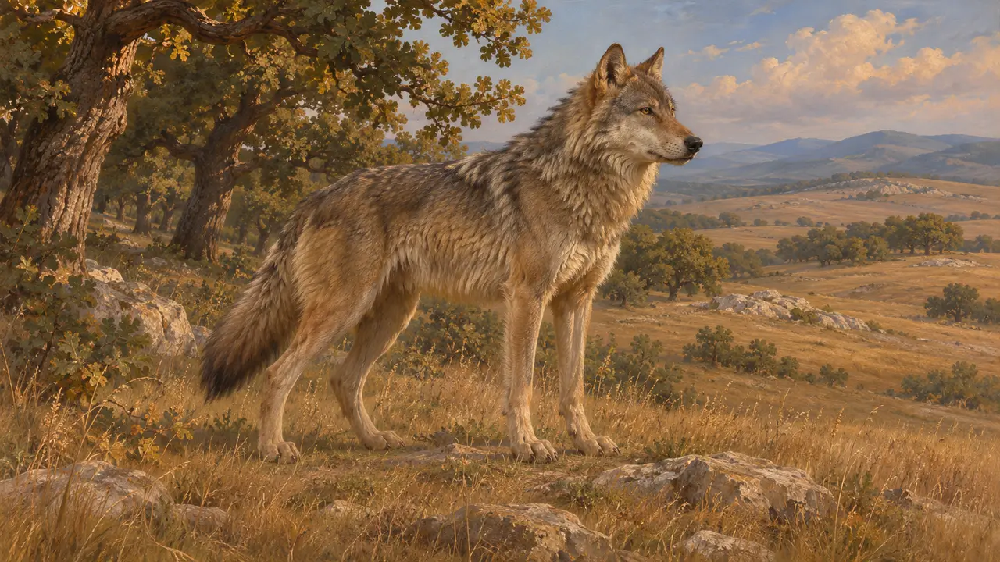
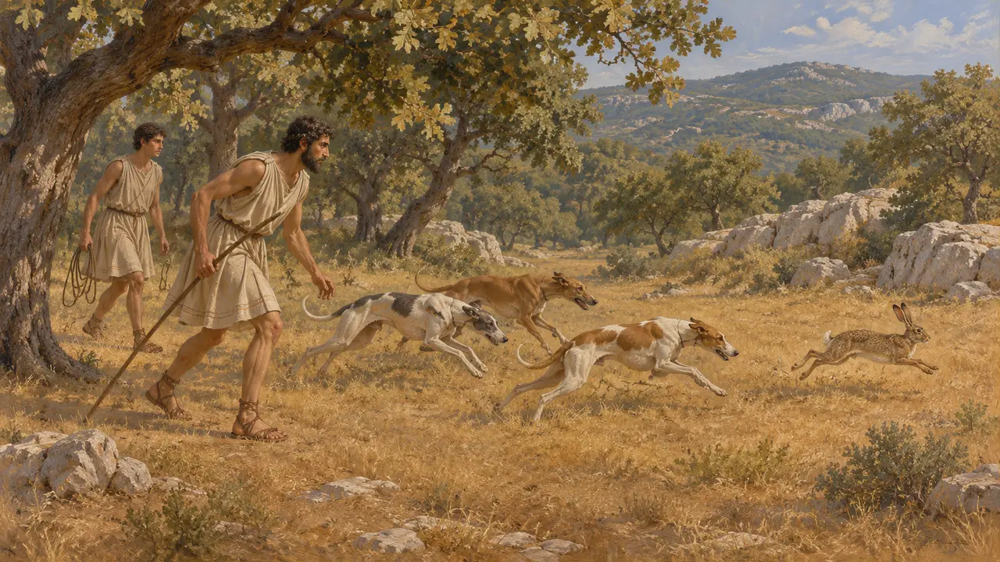
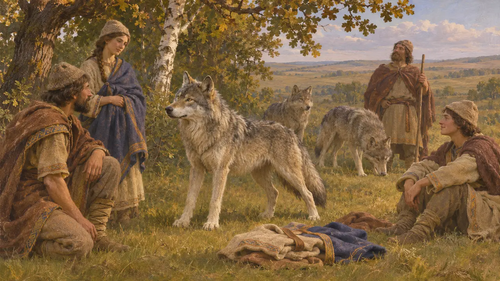
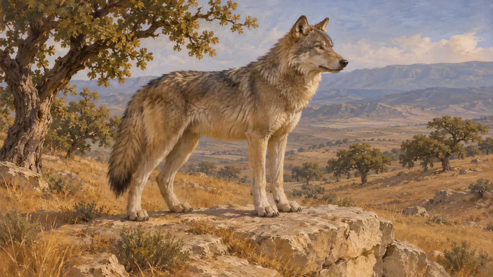

狼栖息在波斯战争所涉及的许多地区,从米底到色雷斯和波奥提亚。当时留存的史料很少谈到它,希腊作家的叙述大多是传闻、狩猎习惯或故事。当时人如何应对狼,我们所知甚少。
游戏中： 狼作为景物绘制在巴加斯塔纳、伊斯特河、阿托斯、温泉关和普拉提亚关卡中,位于城镇尚未占有的土地上。没有任何规则会读取它们。

狼的栖息地
古代记述当时没有任何史料统计狼的数量,也没有记录它们的分布范围。狼出现在米底、色雷斯、马利斯和波奥提亚,是根据这种动物分布广泛而作的推断,并非公元前480年有据可查的事实。游戏中的关卡设定只是合理的猜测,而非记载。
Herodotus

希腊狩猎中的狼
古代记述色诺芬生活在公元前4世纪,他写过一部关于猎犬狩猎的论著。书中主要谈的是野兔、鹿和野猪,狼并不是其主要猎物。这是一部后世的希腊著作,并不是波斯战争时期的证据。
Xenophon, Cynegeticus

涅乌里人与狼人传说
后世传说希罗多德记载，斯基泰人以北的涅乌里人据说每年有几天会变成狼，之后再恢复人形。他说这是斯基泰人和定居于斯基泰的希腊人告诉他的，他们还发誓确有其事，而他并不相信。这是关于遥远民族的旅行者传闻，并不能作为关于狼的证据。
Herodotus 4.105

波斯人生活中的狼
古代记述现存的波斯王室浮雕和铭文以狮子、公牛和复合神兽为主,狼在其中并不占显著地位。波斯人是否在王家苑囿中猎狼,或是否赋予狼某种宗教意义,这一时期的史料都没有说明。把狼与波斯信仰联系起来的说法,通常依据的是晚得多的文本,应当谨慎对待。
P. Briant, From Cyrus to Alexander, 2002
来源
- Herodotus 4.105
- Xenophon, Cynegeticus
- P. Briant, From Cyrus to Alexander, 2002